Peluang Usaha Waralaba Banana Nugget Juara
BANANA NUGGET JUARA
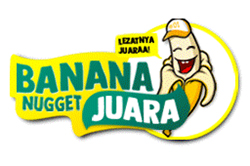
Di zaman yang serba cepat dan kekinian saat ini bingung untuk memilih usaha yang tepat untuk dijalankan. Kami menghadirkan peluang usaha bagus untuk Anda, sudah terbukti dan banyak yang merasakan puas dengan join bersama kami. Siapa yang tidak suka dengan cemilan pisang yang manis serta gurih ini, segala kalangan tua dan muda amat menyukai dan antusias saat mencobanya. Dengan racikan invatif ala chef bintang lima dan dikemas dengan desain yang eyecatching. Tunggu apalagi simak ulasan lebih lengkapnya di bawah ini!
LEZATNYA JUARA!
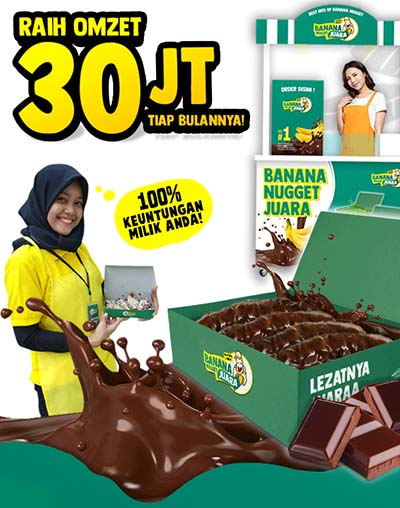
PELUANG USAHA MENGUNTUNGKAN
RAIH OMZET HINGGA 30JT SETIAP BULANNYA
100% Keuntungan Milik Anda!
SPECIAL PROMO! PAKET FRANCHISE
Harga mulai dari : 7,9Jt saja ( Khusus Bulan Ini! )
PAKET USAHA JUARA!
LENGKAP SIAP JUALAN, MASIH ADA JUGA PILIHAN PAKET LAINNYA LHO! CEK DI BAWAH!
LEBIH DARI 300 MITRA TELAH BERGABUNG DAN SUKSES DENGAN KAMI
Mitra kami tersebar di seluruh penjuru tanah air Indonesia, sudah terbukti Banana Nugget Juara usaha paling dicari dan bisnis yang paling menguntungkan.
KISAH SUKSES MITRA KAMI
STEVANUS BOBBY Baula, Sulawesi Tenggara
Salah satu mitra sukses kami asal Baula, Sulawesi Tenggara yang telah mencapai impiannya, bapak Bobby adalah salah satu mitra yang menginspirasi dengan bukti kesuksesannya, selama beliau berjualan hingga saat ini sabar dan tekun dalam menjalani usaha terus melekat dalam diri beliau.Dengan gigih mengumpulkan hasil penjualan sedikit demi sedikit kini bapak Bobby telah berhasil membeli satu buah unit mobil Toyota Fortuner dari tabungan yang selama ini dikumpulkan, kini berpergian bersama keluarga jadi lebih nyaman dan menyenangkan. Sungguh pencapaian yang menabjubkan, walaupun tidak mudah dengan perjuangan dan kerja keras namun hasilnya terasa manis. **PENJUALAN HINGGA 380 PORSI/HARI
RIAN WARDANA Tewah, Kalimantan Tengah
Beliau ini adalah salah satu mitra muda kami yang sukses menjalankan usahanya, Kak Dana rata-rata dalam satu harinya mampu menjual 200-300 porsi, sangat fantastis! Karena usianya yang masih sangat muda kini dia mampu memenuhi kebutuhan dia dan keluarganya dalam sehari hari. Penjualan 200-300 porsi/ hari.
TANTI.S Sumpur, Sumatera Barat
Ibu Tanti sukses menembus targetnya yaitu 300 porsi dalam sehari, sudah lebih dari 3 bulan beliau mampu menjual 300-312 porsi dalam seharinya, dan kini beliau berhasil membuka satu outlet lagi di lokasi berbeda dan berjarak tidak jauh dari outlet pertamanya. Penjualan 300-312 porsi/ hari.
BERBAGAI KEUNGGULAN
1.Franchise Paling Lengkap
Anda akan mendapatkan segala perlengkapan secara lengkap dan siap untuk berjualan! jadi tidak perlu pusing dan khawatir dalam mempersiapkan segala sesuatunya kami telah mempersiapkan untuk Anda semuanya.
Gratis Bahan Baku 100 Porsi
2. No Royalty Fee
Semua keuntungan hasil penjualan akan menjadi milik Anda sepenuhnya 100%, kami tidak menerapkan sistem bagi hasil.
3. Produk Berkualitas
Kami hadir untuk Anda dengan konsep baru, dengan rasa baru serta inovasi baru yang secara rutin dan berkala selalu dikembangkan. Bahan baku paling berkualitas serta design packaging yang eyecatching dan kualitas bahan baku packaging dengan mutu tinggi.
4.Promo Ongkir
Free ongkir khusus pengiriman franchise wilayah pulau Jawa & diskon ongkir untuk pengiriman franchise wilayah luar pulau Jawa.
MASIH BANYAK KEUNGGULAN DARI KAMI RASAKAN KEUNTUNGANNYA! BEST SELLER PRODUCT!
GALERI BANANA NUGGET JUARA LOVER
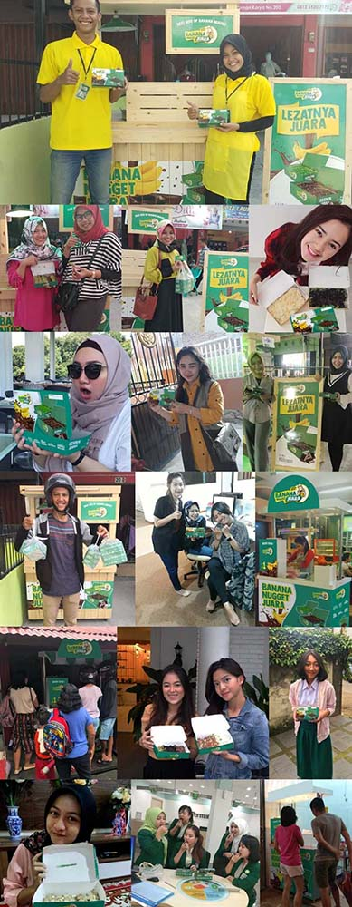
Share moment seru kamu!
AYO POSTING TERUS FOTOMU BERSAMA BANANA NUGGET JUARA FOTO TERBAIK AKAN KAMI REPOST DISETIAP HARINYA. #banananuggetjuara
KENAPA HARUS PILIH KAMI
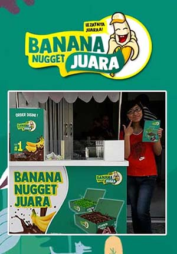
FRANCHISE TERBAIK #1
HARGA TERJANGKAU Hanya dengan modal minim Anda sudah bisa langsung memiliki usaha Banana Nugget Juara tanpa proses yang ribet dan memakan waktu yang lama.
PROSES YANG MUDAH Kami selalu memberikan kemudahan dan layanan dalam pengelolaan usaha Banana Nugget Juara.
FOLLOW UP Team selalu siap membantu serta melayani Anda dalam menjalankan usaha Banana Nugget Juara.
BAHAN BAKU MURAH Bahan baku pisang dari kami adalah yang paling murah dan berkualitas memiliki racikan ala chef profesional.
PENGIRIMAN Kami menyediakan agen pengiriman demi kelancaran distribusi bahan baku maupun paket franchise.
TEAM SUPPORT Kami selalu siap dalam 24 jam dalam melayani dan membanu Anda.
LAYANAN DESAIN GRATIS! Kami selalu siap membantu membuat gerai Anda lebih menarik dengan desain yang fresh dan up to date secara gratis.
BERBAGAI KEUNGGULAN Banana Nugget Juara terbukti berkualitas dan berbeda dari yang lain.
PENJUALAN TERBAIK MITRA KAMI
HAMAM ANGGARA Muaraaman, Bengkulu
PENJUALAN 372 PORSI/ HARI
SUSI SUSANTI Bangkanai, Kalimantan Tengah
PENJUALAN 260 PORSI/ HARI
DAMAR ABDULLAH Popalo, Gorontalo
PENJUALAN 129 PORSI/ HARI
LUSIANA. L Tapalang, Sulawesi Barat
PENJUALAN 130 PORSI/ HARI
TESTIMONI CHAT MITRA
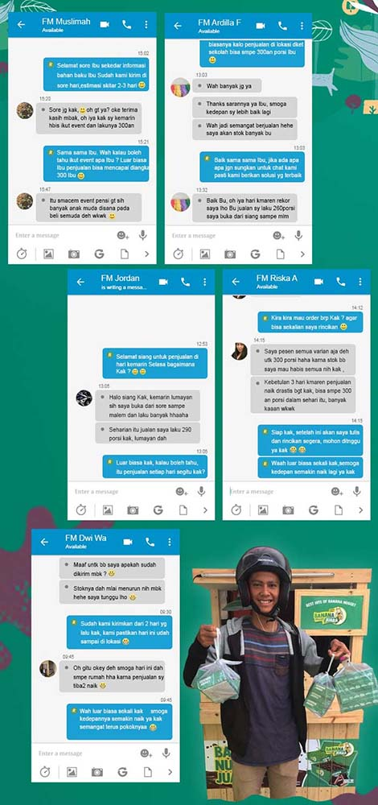
BUKTI RESI PENGIRIMAN DARI EKSPEDISI TERPERCAYA
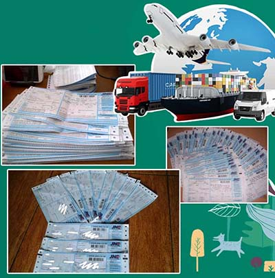
Beberapa bukti resi pengiriman bahan baku dan paket franchise kami, dikirim dengan ekspedisi paling terpercaya.
PILIHAN PAKET PROMO!
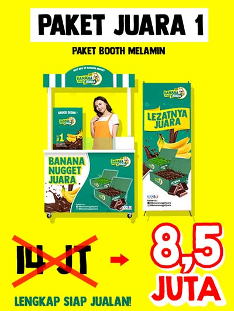
PAKET JUARA 1
PAKET BOOTH MELAMIN
DARI HARGA 14JT DISKON JADI 8,5JT SAJA!
LENGKAP SIAP JUALAN
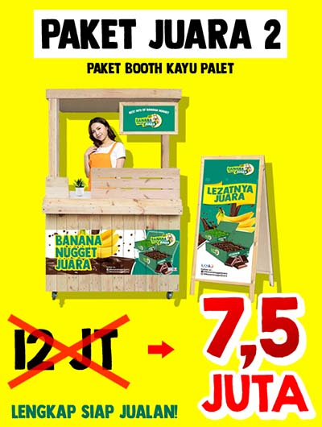
PAKET JUARA 2
PAKET BOOTH KAYU PALET
DARI HARGA 12JT DISKON JADI 7,5JT SAJA!
LENGKAP SIAP JUALAN
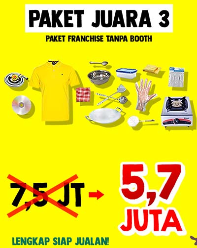
PAKET JUARA 3
PAKET FRANCHISE TANPA BOOTH
DARI HARGA 7,5JT DISKON JADI 5,7JT SAJA!
LENGKAP SIAP JUALAN
MASING-MASING PAKET FRANCHISE SUDAH MENDAPATKAN 100 BAHAN BAKU FREE
KAMI SEDIAKAN LENGKAP
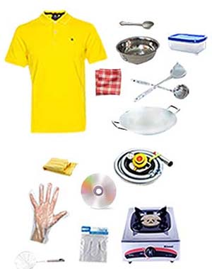
Mendapatkan perlengkapan secara lengkap :
- Kaos seragam : 2 pcs
- Wajan : 1 pcs
- Kompor set : 1 pcs
- Toples wadah toping : 7 pcs
- CD SOP pembuatan : 1 pcs
- Kanebo : 1 pcs
- Book of secret : 1 pcs
- Mixer : 1 pcs
- CO Card : 1 pcs
- Lap serbet : 1 pcs
- Nampan stainless : 1pcs
- Solet : 1 pcs
- Sendok : 1 pcs
- Kuas : 1 pcs
- Parutan keju : 1 pcs
- Hand glove : 1 pcs
- Toples selai : 3 pcs
- Toples adonan : 1 pcs
KUALITAS BOOTH TERBAIK
- BAHAN KAYU BERKUALITAS
Bahan kayu yang digunakan untuk membuat booth berasal dari kayu yang berkualitas tinggi menjadikan booth lebih awet digunakan, kokoh berdiri dan kuat.
- BESI TIANG KUAT
Tiang penyangga terbuat dari besi memperkuat daya sokong booth sehingga tidak mudah goyah.
- DESAIN MENARIK
Desain booth yang menarik dan eyecatching, mempunyai daya tarik tersendiri dan bisa menunjang penjualan Anda
MANAGEMENT SUPPORT
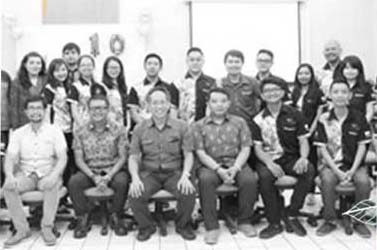
Dengan bekal SDM yang mandiri serta memiliki etos kerja yang kuat kami siap mendukung kelancaran usaha Anda.
Kami memiliki team managemen dengan sifat:
- Profesional
- Fast respon
- Solid
- Melayani mitra dengan sepenuh hati
TEAM SUPPORT
Team management yang siap mensupport dengan sepenuh hati demi membantu menunjang penjualan Anda.
TEAM MARKETING
Team marketing yang senantiasa melayani dan membantu calon mitra saat ingin bergabung membuka usaha Banana Nugget Juara
CUSTOMER SERVICE
Selalu siap membimbing mitra dengan berbagai solusi dalam setiap kendala yang dialami mitra guna mencapai tujuan secara maksimal
TEAM EKSPEDISI
Siap mengirim ke seluruh wilayah Indonesia segala jenis pesanan mitra secara tepat waktu
“TEAM YANG SIAP MEMFOLLOW UP SECARA INTENTS GUNA MENCAPAI PENJUALAN SECARA MAKSIMAL”
GRATIS BUKU PANDUAN SUKSES “Book Of Secret”
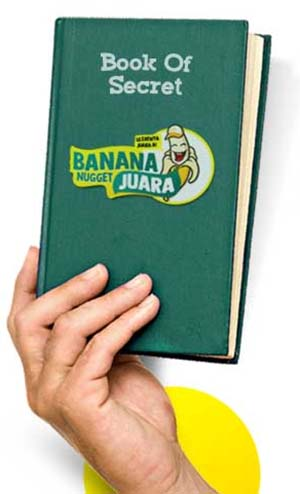
Pelajarilah strategi penjualan yang efektif dan baik. Belajar dari sang Ahli kami merangkum semua trik-trik penjualan paling ampuh dan efisien secara ringkas dan menarik.
Selain mendapatkan resep bahan baku rahasia, kami juga memiliki RESEP RAHASIA SUKSES yang kami bagikan secara khusus untuk Anda
- Mendapatkan BP kurang dari 1 bulan
- Menjual 120 Pack dalam 2 Jam
- Mingkatkan keuntungan 50% tiap bulannya
- Penempatan lokasi paling stategis
BANDINGKAN SAJA
Sudah terbukti Banana Nugget Juara paling berkualitas & beda dari yang lain Berikut ini adalah perbandingan kami dengan produk yang lain
BANANA NUGGET JUARA
- Perusahaan jelas terorganisir
- Produk diproduksi sendiri
- Layanan free design
- Resep rekomendasi dari chef bintang lima
- Inovasi, konsultasi dan sharing untuk perkembangan mitra
PRODUK LAIN
- Perusahaan belum jelas & tidak benefit
- Tidak ada kerjasama dengan instansi besar
- Masih mengambil tender dari pabrik yang masih dijual umum
- Tidak ada inovasi dan pengembangan untuk mitra
“JELAS PALING UNGGULAN!”
MENU BEST SELLER BANANA JUARA

BANANA CHOCOLATE
BANANA GREEN TEA
BANANA STRAWBERRY
BANANA MARSHMALLOW
BANANA CHOCO CHEESE
BANANA KOKOKRUCH
PILIH MENU FAVORITMU!
BAHAN BAKU KUALITAS TERBAIK & TERJANGKAU
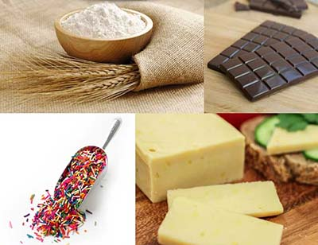
Kami sediakan bahan baku berkualitas unggulan demi menunjang penjualan Anda
RACIKAN BAHAN BAKU Ala Chef Bintang 5
Adonan tepung Banana Nugget Juara dibuat dari bahan baku unggulan racikan ala chef bintang 5
Selai dan topping yang digunakan juga dari bahan baku pilihan dan berkualitas tinggi
Rasa dan kualitas produk tidak diragukan lagi
BAHAN BAKU HABIS? TINGGAL ORDER AJA BAHAN BAKU READY STOCK UNTUK ANDA
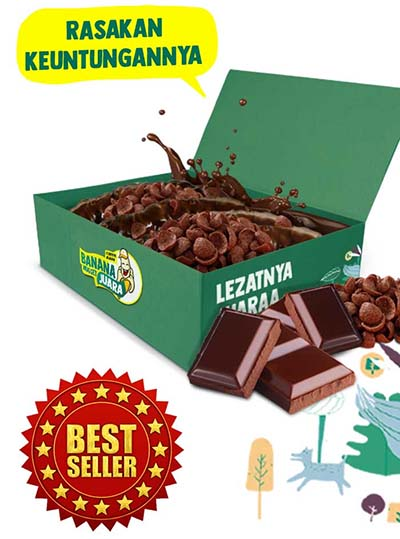
PERHITUNGAN BALIK MODAL
- Tepung Banana Nugget Juara : Rp 30.000,-(30 porsi)
- Kemasan : Rp 1.000,-/ pcs
- Selai coklat : Rp 40.000,-
- Selai strawberry : Rp 40.000,-
- Coklat batang strawberry : Rp 100.000,-
- Coklat batang green tea : Rp 80.000,-
- Coklat batang : Rp 60.000,-
- Marshmallow : Rp 160.000,-/kg
- Koko Krunch : Rp 78.000,-/kg
- Keju : “Disediakan Oleh Mitra”
HPP 1 porsi/box :
- 1 kg tepung (30.000) untuk 30 porsi = Rp 1.000,-/ porsi
- 1 buah pisang bisa jadi 2 s/d 3 slice = Rp 2.500 ( 1 porsi = 4-5 slice)
- Kemasan = Rp 1.000,-/ pcs
- HPP per porsi (diluar topping)
- a. 2 pisang x 2500 = Rp 5.000,-
- b. Tepung = Rp 1.000,-
- c. Kemasan = Rp 1.000,-
Jadi HPP per porsi = kurang lebih Rp 7.000/ porsi (diluar topping)
lain-lain : Rp 5.000,-
Harga jual : Rp 15.000,-/ porsi
Omzet 1 hari kurang lebih 80 porsi : Rp 1.200.000,-
80 x 15.000
Modal 1 hari kurang lebih 80 porsi : Rp 960.000,-
80 x 12.000
Total HPP 1 porsi : kurang lebih Rp 12.000,-
- Omzet 1 bulan 30 x 1.200.000 : Rp 36.000.000,-
- HPP 1 bulan 30 x 9.600.000 : Rp 28.800.000,-
- Gaji karyawan : Rp 1.200.000,-
- Sewa lokasi : Rp 500.000,-
LABA BERSIH : RP 5.500.000,- B.E.P MODERAT : 2-3 BULAN
KEUNGTUNGAN 100% MILIK ANDA
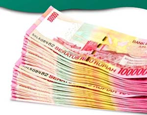
NO ROYALTY FEE NO FRANCHISE FEE NO ADVERTISING FEE
FREQUENTLY ASKED QUESTION (FAQ)
Beberapa pertanyaan dari calon mitra yang sering muncul & kami senantiasa memberikan solusinya
M = Bagaimana menjadi mitra Banana Nugget Juara?
BN = Bisa lihat di persyaratan untuk menjadi mitra Banana Nugget Juara
M = Apa yang membedakan franchise Banana Nugget Juara dengan yang lain?
BN = Franchise kami bisa dibuka di indoor maupun di outdoor. Dan Banana Nugget Juara berbeda dari franchise yang lainnya bukti yang real, bukan hanya testimonial
M = Apakah dikenai biaya dalam pengiriman booth?
BN = Biaya pengiriman ditanggung oleh mitra
M = Berapa ukuran booth Banana Nugget Juara?
BN = Kurang lebih 60cm x 120cm
M = Jika mitra sudah merasa cocok apa yang harus dilakukan?
BN = Langsung menghubungi bagian marketing untuk cara gabungnya
M = Setelah mengisi perjanjian kontrak apa yang harus dilakukan?
BN = Calon mitra bisa melakukan pelunasan dengan mentransfer uang senilai paket franchise yang dipilih ke rekening yang sudah diinformasikan oleh bagian marketing
M = Bagaimana jika dalam satu kota sudah ada outlet Banana Nugget Juara?
BN = Dalam satu kota tidak masalah ada beberapa outlet, asalkan radius antara outlet minimal 1 km
M = Untuk karwayan apakah disediakan dari pusat?
BN = Tidak,untuk karyawan disediakan oleh mitra
M = Bagaimana dengan training karyawan dan cara penyajian Banana Nugget Juara?
BN = Kami mengirim SOP berupa CD yang dikirim bersamaan dengan booth, yang bersifat mudah diterapkan
M = Apakah boleh jika berpindah lokasi dalam berjualan?
BN = Mitra boleh berpindah lokasi asalkan meminta ijin ke kantor pusat dan memberikan alamat lokasi yang baru sebelum berpindah tempat
M = Apakah mitra diperbolehkan dalam mengubah harga jual per porsi?
BN = Kami tidak mematok harga per porsi, kami hanya menyarankan untuk harga jual per porsi kisaran Rp 10.000 s/d Rp 30.000 disesuaikan dengan daya beli disekitar outlet
CARA GABUNG SANGAT MUDAH
Kami bantu memberikan pelayanan dan kemudahan terbaik bagi Anda
1. PILIH PAKET FRANCHISE
Pilih paket franchise yang Anda inginkan. Bisa dilakukan dengan cara telpon melalui marketing kami
2. PEMBAYARAN
Transfer lunas sesuai harga paket dan ongkir. Apabila lunas hari ini, paket akan segera kami kirimkan pada hari yang sama
3.PENGIRIMAN
Paket akan kami kirimkan segera secara cepat agar bisa tiba ditempat dengan waktu tang tepat
4. OUTLET SIAP BUKA
Paket tiba di lokasi tepat waktu & mitra bisa lagsung berjualan
MUDAHKAN, AYO GABUNG SEGERA!
SYARAT & KETENTUAN
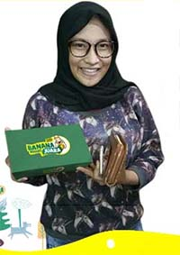
SYARAT
- Memiliki modal yang cukup untuk investasi sesuai harga paket franchise
- Memiliki komitmen terhadap bisnis ini untuk maju dan berkembang bersama
- Bersedia meluangkan waktu untuk terjun langsung mengawasi perkembangan outlet
- Memahami resiko bisnis
- Bersedia menaati peraturan yang ada dalam surat kerja sama
- Wajib membeli bahan baku dari pusat
FASILITAS YANG DIPERLUKAN
- Lokasi berada di tempat strategis : didepan pusat keramaian /didepan sekolah - sekolah menengah keatas, kampus atau mini market
- Luas ukuran tempat sewa minimal sesuai dengan ukuran counter ( 120 cm x 60 cm )
- Karyawan
MASIH RAGU DENGAN RASANYA? COBAIN PAKET SAMPELNYA!
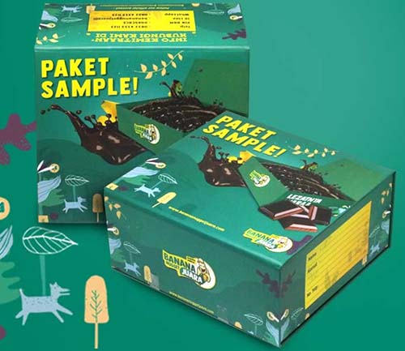
Hanya Rp 80.000,- * Khusus pengiriman pulau Jawa
Hanya Rp 90.000,- * Khusus pengiriman luar pulau Jawa
Harga belum termasuk ongkir
Lengkap dengan CD SOP cara pembuatan
Tagar: #banana nugget juara #franchise banana nugget juara #waralaba kuliner #waralaba banana nugget juara #peluang bisnis banana nugget juara #peluang usaha banana nugget juara #bisnis kuliner #peluang usaha kuliner #peluang bisnis kuliner